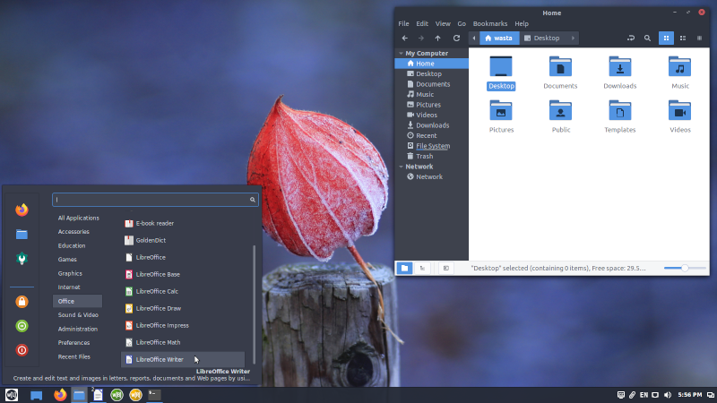

Wasta-Linux: Welcome to Computing Freedom!
Wasta-Linux is a computer operating system perfect for anyone wanting a virus-resistant system that is not only free to share with anyone but also provides freedom of flexibility and customization.
Regardless of what platform you’re coming from, Wasta-Linux has an intuitive interface that is made to look familiar. The default desktop looks and feels a lot like Microsoft Windows, while Cinnamon-Layout allows users to select interfaces inspired by macOS or Ubuntu Unity.
Wasta-Linux is ready “out of the box” for all your computing needs. Feel free to explore more about Wasta-Linux through the menu on the left or:
- Find more detail about Wasta-Linux on the Frequently Asked Questions page.
- See some of the basic Wasta apps in action on the Wasta Intros page.
- Go directly to Download if you are ready to get your copy of Wasta-Linux to install.
- Wanting to customize to make your own version of Wasta-Linux for your users? Check the Customizing page.
- Why Linux is a good place to understand some of the background motivation for using Linux in a multi-national non-profit organization.
